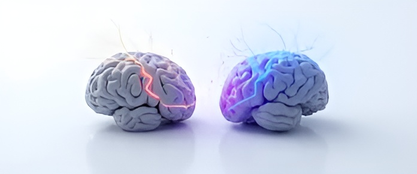

تخلیه روانی در ورزش
تخلیه روانی یعنی آزاد کردن فشارهای احساسی، ذهنی و هیجانی که درون ما جمع شدهاند. هر انسانی در طول روز، به خاطر شرایط مختلف – رقابت، انتقاد، اضطراب یا شکست – هیجانهایی را تجربه میکند که اگر آزاد نشوند، تبدیل به خشم، ناامیدی یا افسردگی میشوند.
در ورزش، تخلیه روانی نقشی حیاتی دارد. ورزشکاران نهتنها فشار بدنی بلکه فشار ذهنی شدیدی را تحمل میکنند؛ از نگاه مربی گرفته تا انتظار خودشان از نتیجه. اگر این هیجانها و استرسها راهی برای خروج پیدا نکنند، به مرور باعث فرسودگی ذهنی و کاهش عملکرد میشوند.
همه ما به طور غریزی بلدیم از خودمان دفاع کنیم، واکنش نشان بدهیم یا احساساتمان را تخلیه کنیم. اما وقتی در این زمینه شکست میخوریم و نمیتوانیم این کار را انجام دهیم – یا به عبارتی مثل خیلی از غرایز دیگر آن را سرکوب میکنیم – درونمان حالت بغض و افسردگی شکل میگیرد. حتی گاهی حداقل کاری مثل گریه یا خنده را هم نمیتوانیم انجام دهیم، و این یعنی انرژی روانی در درون ما گیر کرده است.
تخلیه روانی میتواند شکلهای مختلفی داشته باشد: برای یک ورزشکار، فریاد زدن بعد از بازی، دویدن تا خستگی، صحبت با همتیمیها یا حتی گریه کردن، همه نوعی رهاسازی هستند. هدف این نیست که خشم یا ناراحتی را سرکوب کنیم، بلکه یاد بگیریم آن را در مسیر درست تخلیه کنیم تا ذهنمان سبک شود.
تحقیقات نشان میدهد که ورزشکارانی که اجازه میدهند احساساتشان را به شیوهی سالم بروز دهند، عملکرد پایدارتری دارند. در مقابل، سرکوب هیجانها باعث انباشت فشار درونی میشود که بعدها ممکن است به شکل خستگی روانی، اضطراب یا حتی پرخاشگری بروز کند.
تخلیه روانی سالم یعنی شناخت احساسات، پذیرش آنها و سپس بیرون ریختنشان به شکل مناسب: گفتوگو با مربی، نوشتن، فریاد در خلوت، دعا، یا حتی خندیدن از ته دل. هر کدام از اینها کمک میکنند تا ذهن از بار هیجانی سبک شود و تمرکز به بدن بازگردد.
بنابراین، تخلیه روانی نشانهی ضعف نیست؛ بلکه یکی از نشانههای سلامت روانی و قدرت درونی است. ورزشکار حرفهای میداند که بدن بدون ذهن آرام، دوام نمیآورد. همانطور که عضلات نیاز به استراحت دارند، ذهن هم به رهایی نیاز دارد.